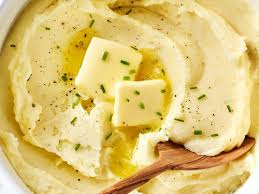

Mashed Potatoes

This mashed potatoes recipe is perfect if you're looking for goof, old-fashioned mashed potatoes. Made with just potatoes, milk, butter, and optional garlic, this go-to recipe makes a classic holiday dish. Learn how to make mashed potatoes that come out smooth, creamy, and delicious every time! Serve with gravy or extra butter on top.
| Prep Time |
Cook Time |
Total Time |
| 15 minutes |
20 minutes |
35 minutes |
Ingredients
- 2 pounds baking potatoes, peeled and quartered
- 3 cloves garlic, peeled, or to taste
- 1 cup milk
- 2 tablespoons butter
- Salt
- Ground black pepper to taste
Directions
- Step 1:
Make the meat sauce.
- Step 2:
Cook the noodles.
- Step 3:
Make the ricotta mixture.
- Step 4:
Layer the lasagna according to the recipe instructions
- Step 5:
Cover with foil and bake
- Step 6:
Let the lasagna rest before serving.